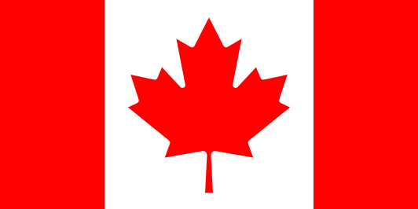

Over Canada
Canada is het op twee na grootste land ter wereld, met een oppervlakte van 9,98 miljoen vierkante kilometer. Het land ligt in Noord-Amerika en grenst aan de Verenigde Staten in het zuiden, de Noordelijke IJszee in het noorden, de Atlantische Oceaan in het oosten en de Stille Oceaan in het westen. Canada is beroemd om zijn natuurlijke schoonheid, van de besneeuwde bergtoppen van de Rocky Mountains tot de uitgestrekte bossen, meren en ongerepte natuurreservaten.
Geografie en Natuur
Canada beschikt over enkele van de mooiste en meest diverse natuurlijke omgevingen ter wereld. Van de kusten van de Atlantische provincie Newfoundland en Labrador, tot de ongerepte bossen en meren van Ontario en Quebec, tot de bergen van British Columbia en de ruige Arctische regio’s, het landschap van Canada biedt eindeloze mogelijkheden voor avontuur en ontdekking. Het land heeft 48 nationale parken en tientallen provinciale parken die bezoekers de kans geven om de ongerepte natuur te verkennen.
- Banff National Park: Gelegen in de Rocky Mountains, beroemd om zijn spectaculaire bergen, meren en wilde dieren.
- Niagara Falls: Een van de beroemdste watervallen ter wereld, gelegen aan de grens tussen Canada en de VS.
- Glen Eden: Populair voor wintersporten en een van de bekendste skiresorts in Ontario.
Geschiedenis van Canada
Canada heeft een rijke en diverse geschiedenis, van de inheemse volkeren die het land duizenden jaren geleden bewoonden, tot de komst van Europese ontdekkingsreizigers en kolonisten. Canada werd oorspronkelijk bewoond door verschillende inheemse stammen, zoals de Cree, Algonquin, en Iroquois. De Europese geschiedenis begon in 1534 toen de Franse ontdekkingsreiziger Jacques Cartier het land verkende en claimde voor Frankrijk. In 1867 werd Canada een dominion binnen het Britse Imperium, en het land werd pas volledig onafhankelijk in 1982 met de goedkeuring van de Canada Act.
Politiek en Bestuur
Canada is een constitutionele monarchie met een parlementaire democratie. De Britse monarch, momenteel Koning Charles III, is het staatshoofd, maar de dagelijkse regering wordt geleid door de premier, die wordt gekozen door het parlement. Het parlement bestaat uit twee kamers: het Lagerhuis en de Senaat. Canada heeft tien provincies (zoals Ontario, Quebec, British Columbia) en drie territoria (zoals Yukon en Noordwest-gebieden), die elk hun eigen regering hebben.
- Hoofdstad: Ottawa, gelegen in de provincie Ontario, is de politieke hoofdstad van Canada.
- Premier: Justin Trudeau is de huidige premier van Canada (vanaf 2024).
- Koninklijk Huis: Canada heeft de Britse monarch als staatshoofd, met een gouverneur-generaal die de monarch vertegenwoordigt in Canada.
De Canadese Cultuur
De Canadese cultuur is een mengeling van verschillende invloeden, van de inheemse gemeenschappen tot de Franse en Britse koloniale erfenis, tot de moderne invloeden van immigranten uit de hele wereld. Engels en Frans zijn de officiële talen van het land, en er is een rijke traditie van muziek, kunst en literatuur. De sportcultuur van Canada is ook van groot belang, met ijshockey als nationale passie, evenals lacrosse, voetbal en wintersporten.
- IJshockey: Canada wordt beschouwd als de bakermat van ijshockey, en het nationale team heeft vele wereldkampioenschappen en Olympische gouden medailles gewonnen.
- Literatuur: Beroemde Canadese auteurs zijn onder andere Margaret Atwood, Michael Ondaatje en Leonard Cohen.
- Film en Muziek: Canada heeft een bloeiende filmindustrie, met regisseurs zoals David Cronenberg en producenten van wereldberoemde acts zoals Justin Bieber en Drake.
Onderwijs in Canada
Canada staat bekend om zijn uitstekende onderwijssysteem, dat wordt beschouwd als een van de beste ter wereld. Het land heeft tal van prestigieuze universiteiten en hogescholen, en onderwijs wordt gefinancierd door de provinciale regeringen. De meeste provincies bieden gratis basis- en middelbaar onderwijs, en het land heeft een van de hoogste percentages van hoogopgeleiden ter wereld.
- Universiteit van Toronto: Een van de topuniversiteiten van Canada, beroemd om zijn academische excellentie en onderzoeksprogramma’s.
- McGill University: Gelegen in Montreal, deze universiteit is wereldwijd gerespecteerd en trekt studenten van over de hele wereld.
- University of British Columbia (UBC): Beroemd om zijn innovatieve onderwijs en researchprogramma’s, met een focus op duurzaamheid en technologie.
De Canadese Economie
Canada heeft een van de grootste economieën ter wereld, met een breed scala aan sectoren die bijdragen aan het nationaal inkomen, van natuurlijke hulpbronnen tot technologie en diensten. Het land is rijk aan olie, gas, en mineralen, en de Canadese economie is sterk afhankelijk van de export van grondstoffen, vooral naar de Verenigde Staten.
- Olie en Gas: Canada is een van de grootste olieproducenten ter wereld, met grote olievelden in de provincie Alberta.
- Landbouw: Canada is een van de grootste producenten van tarwe, vlees en andere agrarische producten.
- Technologie en Innovatie: Vancouver en Toronto zijn opkomende technologiehubs, met bedrijven in kunstmatige intelligentie, technologie en biowetenschappen.
Bezienswaardigheden en Toerisme
Canada heeft tal van toeristische trekpleisters, van de iconische Niagara Falls tot de charmante stad Quebec, tot de ongerepte natuur van de Rocky Mountains. Toerisme is een belangrijke sector voor de Canadese economie, met miljoenen bezoekers per jaar die komen voor de natuur, cultuur en het avontuur.
- Niagara Falls: Een van de meest indrukwekkende watervallen ter wereld, die bezoekers van over de hele wereld trekt.
- Old Quebec: Een UNESCO Werelderfgoedlocatie die bekend staat om zijn oude, charmante straatjes en historische gebouwen.
- Vancouver: Een stad die bekend staat om zijn prachtige ligging tussen bergen en oceaan, en een centrum van cultuur en natuur.
Feiten en Cijfers
- Oppervlakte: 9,98 miljoen vierkante kilometer
- Bevolking: Ongeveer 38 miljoen mensen
- Hoofdstad: Ottawa
- Officiële talen: Engels en Frans